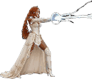

Jandé · Once Upon A Time · Action RPG
Every character that ships in the RPG, pulled straight out of the game’s own atlases.
Nothing on this page was redrawn or described from memory. Each figure is the shipped sprite, cut from the file the game loads at runtime, and every number beside it was read out of the source or measured off the pixels.
The heroine
Thirteen rendered animation sheets — ten side-view for the RPG, three back-view for Royal Runner. The side art faces right; left is a mirror. She fights with her voice, so every verb in the game is a musical one.

Her vocabulary
| Slot | Frames | Rate | What it is |
|---|---|---|---|
| idle | 6 | 6.7 fps | Breath and shift |
| run | 8 | 15 fps | 2.36 body-heights per cycle |
| jump | 6 | 8.6 fps | Held 7 each across 44 frames of airtime |
| attack | 8 | 30 fps | Mic Strike — the fastest sheet in the game |
| dash | 5 | 15 fps | Ground dash, on a cooldown |
| block | 3 | 10 fps | Hold Note — the guard |
| dance | 6 | 10 fps | Idle flourish and the victory beat |
| refrain | 6 | 10 fps | Refrain — the heal |
| belt | 5 | 15 fps | Belt — the magic strike |
| downstrike | 4 | 15 fps | Downbeat — the aerial pogo |
| bkrun | 25 | — | Back view, Royal Runner |
| bkjump | 25 | — | Back view, Royal Runner |
| bkslide | 25 | — | Back view, Royal Runner |
Six types · 36 painted cells
They are introduced on a schedule, not all at once — the stage you first meet one is the real information here. All six share a single 52×58 collider anchored at the feet; the drawn size differs per type so the painting reads at speed. Each bleeds what it is made of, and only flesh bleeds red.
Nine stages, nine villains
Each stage ends the same way: a locked gate, a sealed arena, and a villain that belongs to nowhere else. Four idle frames cycle through the fight; five defeat frames play on the kill, under slow motion, a KO spotlight and a push-in. HP is shown at normal difficulty — ×1.4 on Hard, ×0.7 on Easy.
Found while making this page
Laying all 81 villain cells out side by side made something visible that playing never did. Across every other boss, the defeat run drops its weight down the cell and loses substance — the centre of mass travels +14.6px on the Ink Warden and +111.4px on the Storm Titan, shedding up to 43 points of coverage.
Row nine alone travelled the other way: −20.7px upward, +4.9 points gained. Measured a second way, by silhouette overlap against each villain’s own standing pose, the other eight finish least like themselves and the Groom finishes most like himself (0.505, the highest of his five).
So on the climax of the whole game, the Groom collapsed into frame and then stood back up. His five cells were authored in reverse and it shipped that way. The art was always right; only the order was wrong, and it now plays from the last cell to the first. He is struck, he burns, he falls.